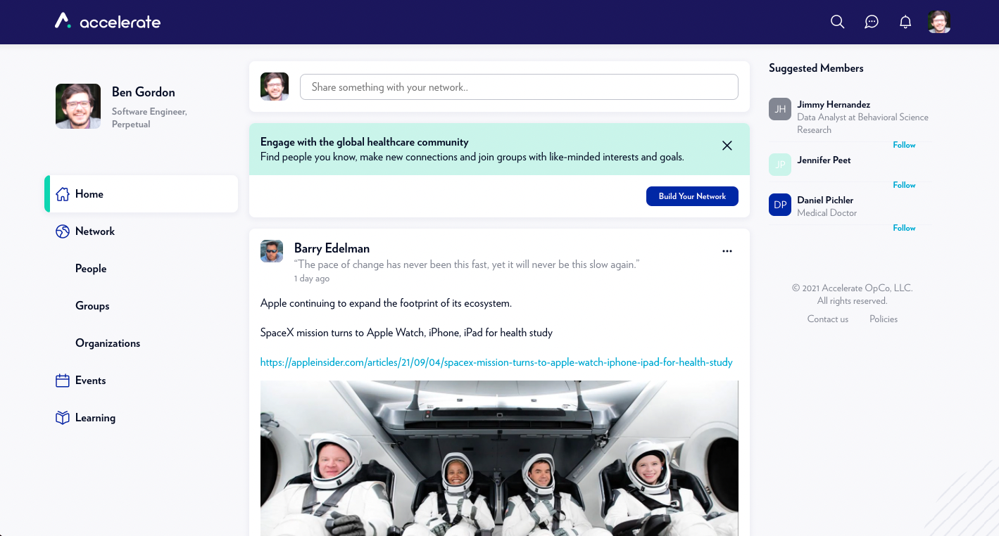
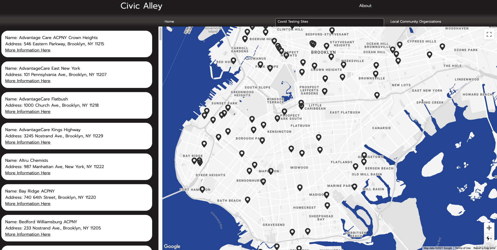
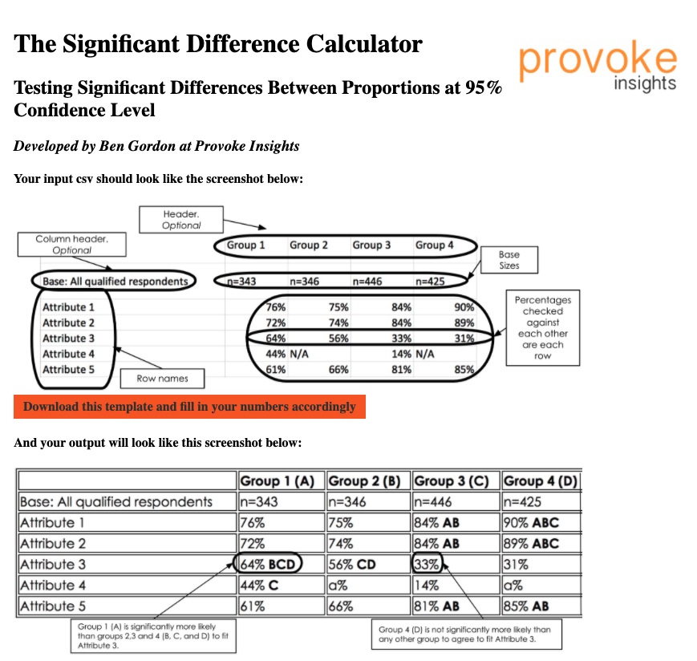
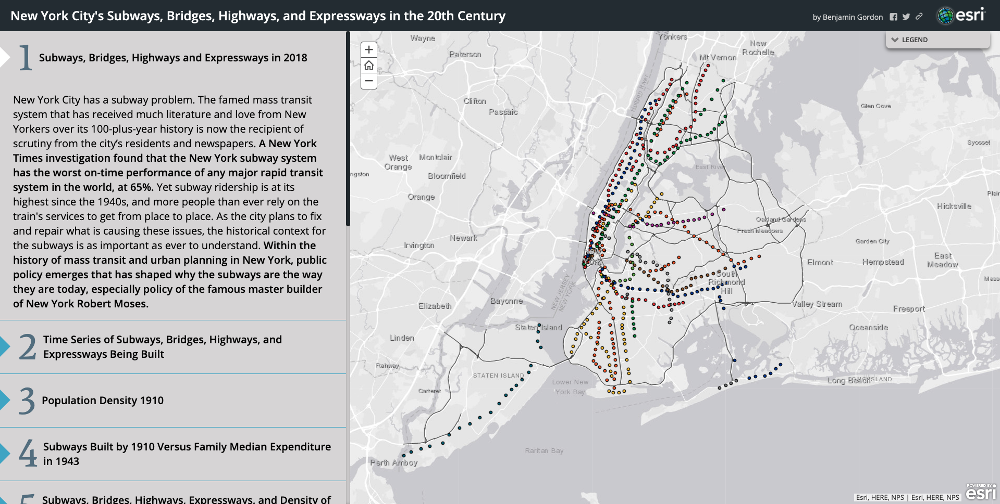

About Me
I am a software engineer and musician from Queens, NY, currently working for Perpetual. I am a Posse Foundation alumni who attended Lafayette College and graduated in 2019 with a double major in Data Science and Music.
Resume
Skills
Languages: JavaScript, TypeScript, R, Python, HTML5, CSS3, Java
Libraries/Frameworks: React, Redux, Node
Web Tools: Git, GitHub, Heroku, PostgreSQL, JIRA, Postman, Storybook
Projects
Accelerate

A social media platform developed to connect healthcare professionals across the globe by HIMSS
- Developed collaboratively using Typescript, React.js, Node.js, and PostgreSQL.
- Contributed to all parts of the desktop and mobile website on both frontend and backend, including the newsfeed, messaging, user-created events, image storage, and gamification.
- Monitored both production and development environments and submitted four hotfixes for repetitive or large network calls.
- Served as acting QA engineer when position went unfilled.
- Architected data models for storing application information regarding gamification, events, interests, products, and users.
- Increase loading time on the app by 30% through Cloudinary transformations.
- Create a reusable autocomplete input component from scratch.
Civic Alley

A web-based map which offers COVID-19 community resources for Brooklyn, NY, as well as local community organizations.
- Developed collaboratively over Git, using Node.js, React.js, Next.js, CSS, HTML, and Express.js.
- Web-scraped data on COVID testing sites in Brooklyn to dynamically display a map of locations.
- Used Next.js to dynamically create webpages for each individual testing site and community organization in order to allow easy sharing of information.
- Github
Significant Differences, Provoke Insights

A web-based application that receives a csv of proportions and returns (a table tested for statistically significant differences).
- Developed using Node.js and HTML.
- Delivered increased efficiency in numerical checking for use by all employees.
- Github
New York City's Subways, Bridges, Highways, & Expressways in the 20th Century

A story map that details the history of the building of public transit in New York City.
- Developed in ArcGIS Online.
- Visualizes the shift in focus of building new subway stations to building bridges, highways and expressways that did not include any lanes for trains or buses.
- News item and video on Lafayette College's website
Get in touch
Feel free to contact me at via email at benjamingordon27@gmail.com or phone at (347) 738-0145